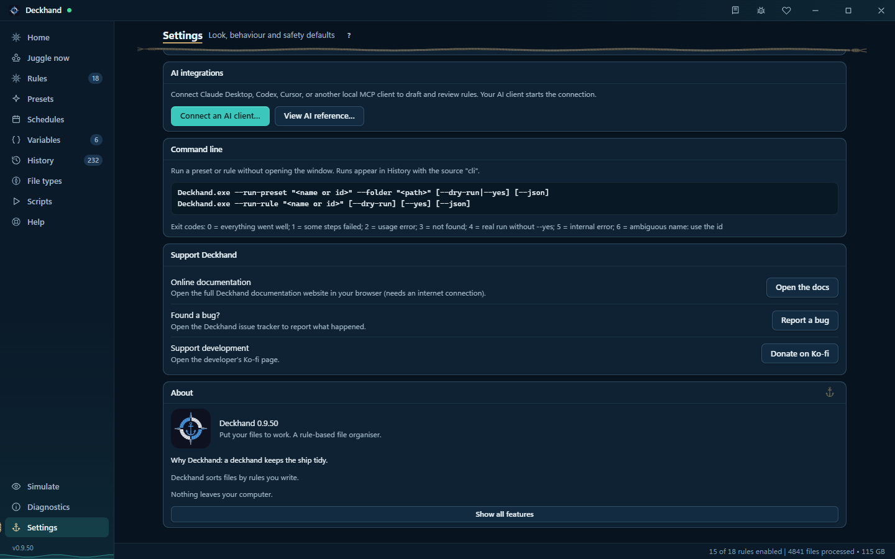

Writing rules with an AI assistant
Have an AI tool draft a rule as JSON, then validate, review and import it in Deckhand.
An AI assistant can draft rules for you. It writes a JSON file. You import it, Deckhand checks it, and you review it before anything runs. The assistant never needs access to your files.
Help → Author rules with AI... and Help → Connect an AI client... are on the Help page, and the same setup is in the AI integrations card of Settings, as in the screenshot.


How it works
- In Deckhand, open Help → Author rules with AI.... It copies the reference material for your chosen AI tool.
- Describe what you want. A good assistant asks for the full Windows paths it needs before drafting, such as
C:\Finance\Dropor a network path like\\server\share\Invoices. - Save the JSON the assistant gives you to a file.
- In Deckhand, open Rules → Import and select the file. Deckhand validates it before showing Import.
- If there are errors, use Copy issues, give them to the assistant, and import the revised draft.
- Review the imported rule. Rules arrive disabled. Preview on a real folder before you switch one on.
What the assistant needs
Give your assistant these references:
- The authoring guide, a compact description of every field a draft may use.
- Worked examples, complete drafts that pass validation.
- The draft JSON schema.
The shape of a draft
A draft is a JSON object with deckhand_export set to 1 and optional lists of rules, presets, variables and scripts. A minimal example:
{
"deckhand_export": 1,
"rules": [
{
"id": "pdfs",
"name": "PDFs from Downloads",
"enabled": false,
"folders": [{ "path": "C:\\Users\\Me\\Downloads" }],
"condition": { "kind": "file_type", "types": ["pdf"] },
"actions": [
{ "kind": "move", "dest": "D:\\Documents\\PDFs", "on_conflict": "skip" }
]
}
]
}Paths in JSON need doubled backslashes. Names of conditions and actions are listed in the Conditions reference and Actions reference.
Reading the text of files
For tests on what is written inside a file, use one File contents condition ("var": "contents"). It reads text files, PDF, Word, Excel, PowerPoint and OpenDocument files, and pictures and scanned PDFs through Windows OCR. Its options go on the condition as "contents": { "ocr": true, "columns": false }: ocr reads images and scanned PDFs (on by default), columns reads a PDF column by column. Leave the object out for the defaults. There is no per-rule OCR switch any more, and contents.columns is only accepted from old drafts. See File contents.
Names are not unique
Two rules can have the same name. When a draft or a request refers to an existing rule or preset, use its id, not its name. If several rules share a name, ask the user which one they mean. The command line exits with code 6 for an ambiguous name and lists the candidates, see Command line.
Safe habits for drafts
- Every rule has
"enabled": false. - Use only fields in the schema. Deckhand rejects invented ones.
- Prefer
recycletodelete, andon_conflictset toskipunless you asked for something else. - Keep scripts minimal. Do not give a script credentials or network access unless you really want that.
- Read the assistant's list of assumptions before importing.
Checking from the command line
AI tools that can run commands may validate a draft without importing it:
Deckhand.exe --validate-draft draft.jsonSee Command line.
Limits
Deckhand rules react to file changes, rescans and schedules. They have no loops, no counters that persist between runs, and no "stop processing" step. Anything involving the network, email or databases needs a script action.